I'm a microengineering student at EPFL who can't stop building things that move. Rovers, drones, robot arms, and now a humanoid: I love designing the electronics, writing the code, and watching it all work in the real world.
Click any project for the full story: what it does, what I built, and the numbers.
Featured
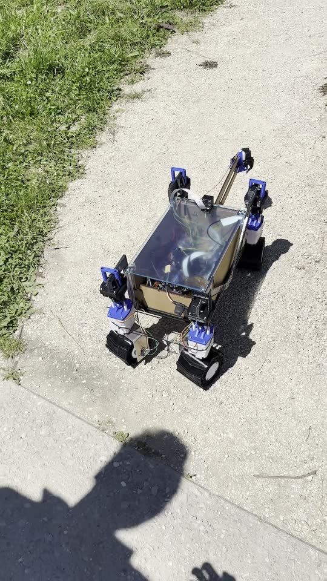
3rd · Xplore Rover ChallengeEPFL Xplore
Autonomous rover with sensor fusion
Custom PCB, full electronics and autonomy stack for a differential-drive rover that finds and approaches a target on its own.
Hardware
ESP32, 4 DC motors, 5 servos, custom PCB
Fusion
IMU + LiDAR + ultrasonic via Extended Kalman Filter
Autonomy
HSV detection, LiDAR gap-finding state machine
Stack
ROS 2, Gazebo Harmonic, robot_localization
3rd · Xplore Rover ChallengeEPFL Xplore
Autonomous rover with sensor fusion
A differential-drive rover that finds a target panel on its own, drives to it and avoids obstacles on the way. I did the full electronics, from the custom PCB to sensor integration, and wrote the autonomy software.
My role
Designed the custom PCB and all of the rover's electronics.
Integrated the IMU, LiDAR and ultrasonic sensors and fused them with an Extended Kalman Filter.
Wrote the autonomy stack: simulation, computer vision and the navigation state machine.
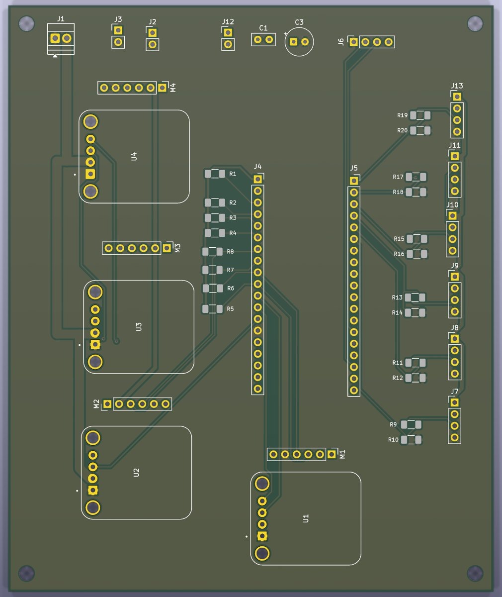
The rover's custom PCB (3D render).
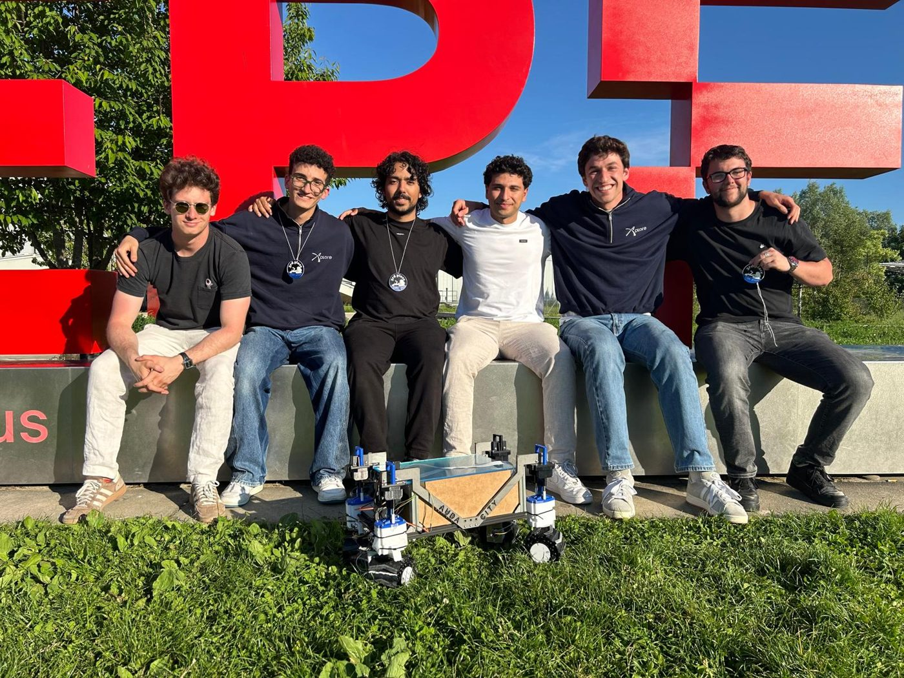
The team with the rover. I designed its motor and sensor board in KiCad: four motor drivers, the ESP32 and six ultrasonic sensors with level shifting.
How it works
An ESP32 controls the motors and servos, and ROS 2 fuses the IMU, LiDAR and ultrasonic sensors to know where the rover is. A camera detects the target, and the rover plans its way there while avoiding obstacles. Everything was developed in Gazebo simulation first, then moved to the real robot.
Search→Align→Approach→Avoid→Arrive
The navigation is a state machine: the camera finds the target by colour (HSV), the rover turns to face it, then drives towards it while a LiDAR gap-finder steers around obstacles.
What was hard
The filter rejected the wheel odometry.The Extended Kalman Filter only started to trust the wheels after I calibrated the IMU and tuned the odometry covariance.
The rover: aluminium chassis, four wheel modules, ultrasonic sensors, camera and a front gripper arm. In the video at the top it is driven by remote control on an outdoor test.Autonomous run in simulation, seen in RViz (ROS 2 Jazzy, Gazebo Harmonic). The camera finds the orange panel with an HSV threshold, the state machine drives towards it, and the LiDAR gap-finder steers around the two walls in the way. The pose comes from the EKF (wheel odometry and IMU). Green: path driven. Yellow: estimated target. White arrow: gap chosen. The navigation was re-implemented for this recording, shown at 2× speed.
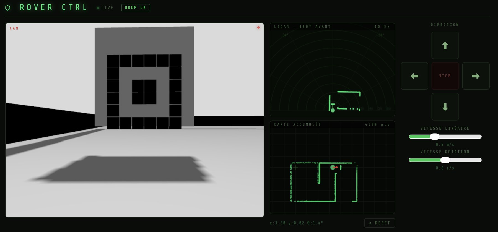
Control interface: live camera, 180° LiDAR scan and the map built as the rover drives (Gazebo simulation).
Result
Our team finished 3rd at the Xplore Rover Challenge.
Objects are thrown anywhere on the floor. MAKAI scans the room, drives to each one, picks it up and drops it in the right box: cans in the trash, laundry in the basket. Built over one hackathon weekend, with cameras as its only sensors.
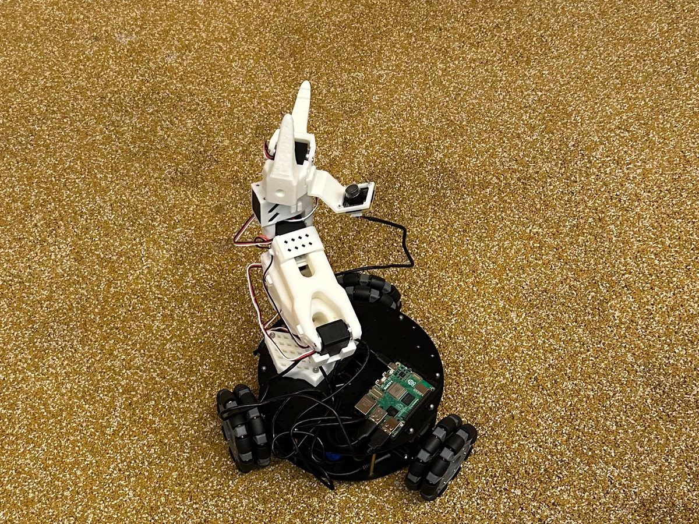
MAKAI: an SO-101 arm on a LeKiwi omnidirectional base, driven by a Raspberry Pi 5.
One mission, six steps
Scan→Approach→Pick→Carry→Drop→Home
The front camera detects objects and the drop stations (marked with printed markers) and converts them into positions on the floor in metres. Navigation always brings the object to the same spot in front of the robot, so the learned grasping policy only has one gesture to master. Dropping uses scripted arm poses, and the whole mission runs as a state machine that was tested in a 2D simulator before going on the robot.
Results
7/10successful autonomous trials
2cameras, no LiDAR or depth sensor
10 msobject detection per frame
1–2 cmfloor localization from the camera alone
Tech
Hardware
LeKiwi (3 omni wheels, Raspberry Pi 5), SO-101 arm, Logitech C270 front camera, wrist camera
A drone that flies only when a panel's current drops, scans it at close range in RGB and thermal, and turns the fault into a work order. Detection runs on the edge, on an Arduino UNO Q.
Close-range drone inspection for solar plants, and the console that turns a fault into a work order. We built the payload and the software, not the drone.
The problem
Hot spots, cracked cells and soiling cost energy and can start fires, but they are hard to see from the ground. Today they are found by technicians walking with a handheld thermal camera, by fixed camera towers that watch the site rather than each cell, or by high-altitude drone passes where one faulty cell is only a few pixels.
One loop: detect, dispatch, inspect, act
Current drop→Alert→Drone takes off→Close-range scan→Work order
Each module's current is compared with the current expected for its zone's irradiance, so a passing cloud triggers nothing. A drop of 6 % opens a watch alert, 15 % escalates it to critical, and the drone is dispatched on its own. It descends to 0.65 m from the glass, with the gimbal at −60° so the camera faces the 30° panel, flies a U-shaped pass and holds 5 s in front of each defect for a clean close-up.
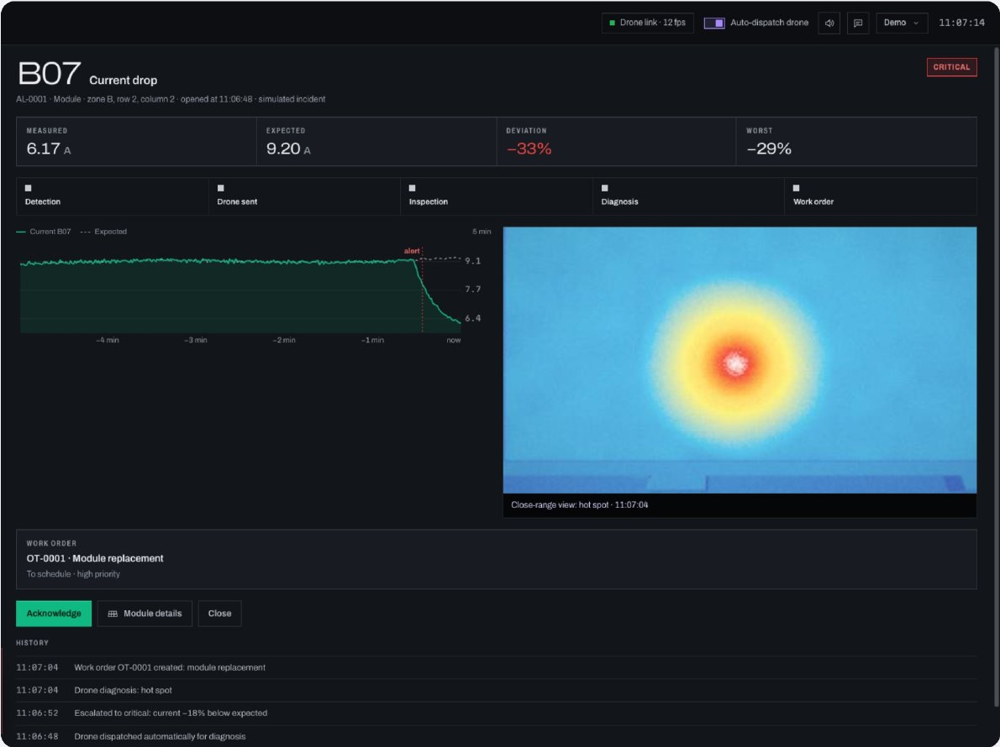
From a current drop on B07 to work order OT-0001 in 16 seconds, with no operator input: module replacement, high priority, 105 W lost.
The platform
A 3D simulation of the plant, the drone, its mission logic and its onboard camera.
A Node.js server in the middle that handles electrical supervision, alerts, dispatch and work orders, linked over WebSocket.
An operator console for supervision, flight control and work orders. Every action is also a REST call, and the console would supervise a real drone unchanged.
Twelve incident scenarios (module faults, structure tilt, wind gusts, rain, vegetation), each detected only through what a real sensor would report.
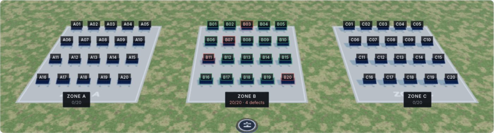
Zone B inspected panel by panel: 20/20 panels, 4 defects located (crack, hot spot, two soiling), in 5 minutes of simulated time.
Edge AI payload prototype
The defect detector runs entirely on an Arduino UNO Q, with no cloud: YOLO11n on ONNX Runtime on its Linux side, multi-object tracking so one defect gives one report, and the board's STM32 microcontroller raising LED alerts. A phone camera stands in for the payload camera, flying over a printed test panel.
Labels for free: subtracting the healthy print from the defect print gives exact defect boxes, so nothing was labelled by hand.
300 randomised views (distance, tilt, print, lighting, blur, noise), fine-tuned from COCO in 16 minutes on a laptop CPU.
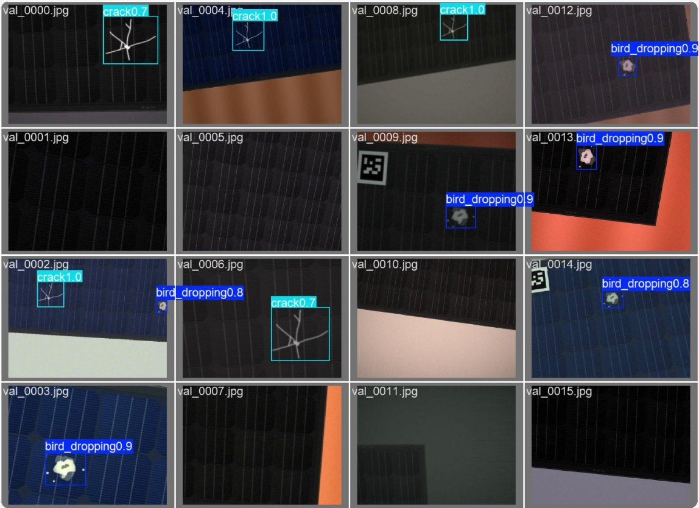
Detector output on validation images never used in training.
Results
14/14inspection flights passed, 0 false alarms
1.000recall
0.994precision
0.995mAP50
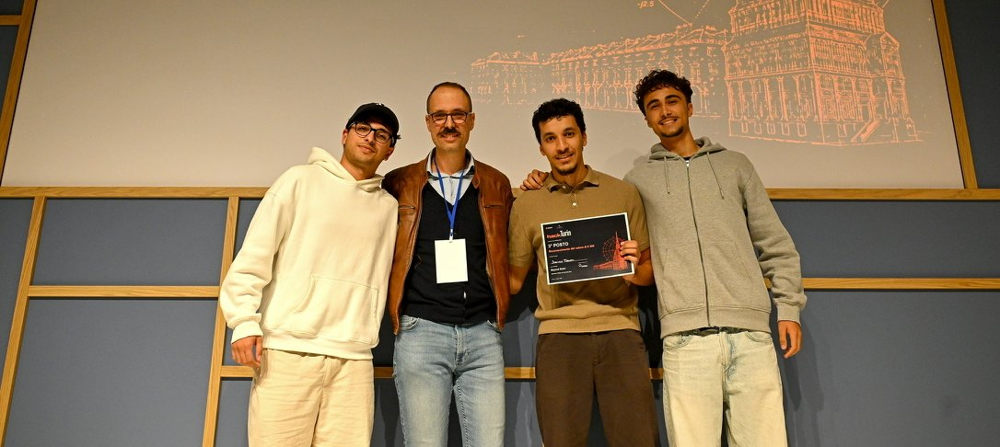
On stage at the HackTurin award ceremony, Beyond Solar track.
Leading the electronics of the team's drone for the European Rover Challenge, including an electrical hot-swap system for the power supply.
Role
Electronics Lead
Power
Two 6S batteries, hot-swap, 12 V and 5 V rails
Avionics
Pixhawk 6X, Jetson Orin Nano, 4 LiDARs
In progress · Electronics Lead
Competition drone, EPFL Xplore
The Xplore drone team builds its drone from scratch, and was named the best student drone team in Europe in 2025. I lead the electronics.
My role
Electronics Lead: power architecture, wiring and integration of the avionics.
Designing an electrical hot-swap system so the batteries can be changed without powering the drone down.
Next, I plan to work on navigation and embedded software.
Architecture
2 × 6S batteries→Hot-swap + power module→12 V / 5 V rails→Pixhawk 6X · Jetson Orin Nano · ESCs · 4 LiDARs
The Pixhawk 6X handles flight control, while the Jetson Orin Nano runs on-board perception and autonomy using four LiDARs.
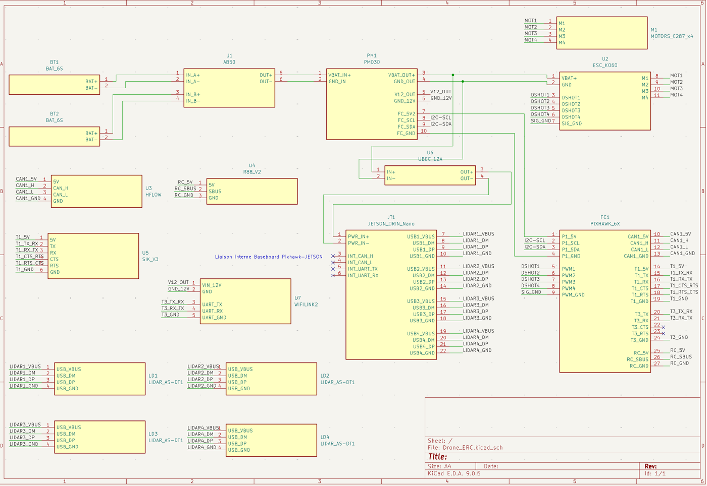
System schematic of the drone electronics (KiCad).
Hot-swap power board
I designed a PCB in EasyEDA that lets the team swap a battery without powering the drone down. Each of the two 6S packs plugs into its own XT60 input and feeds a shared bus through an ideal diode: an LM74700 controller drives two MOSFETs in parallel. The bus is always fed by the healthier pack, and current can never flow back from one battery into the other, so one pack can be unplugged while the other keeps the drone running.
Battery A (XT60)→LM74700 + 2 MOSFETs→Bus←LM74700 + 2 MOSFETs←Battery B (XT60)
Bus output on an XT60, with a 100 µF bulk capacitor and four 4.7 µF / 100 V ceramics to ride through the switchover.
SMCJ26A TVS diode on the bus against voltage spikes when a pack is plugged in.
Large copper pours for the battery and bus current, with each battery's area kept separate.
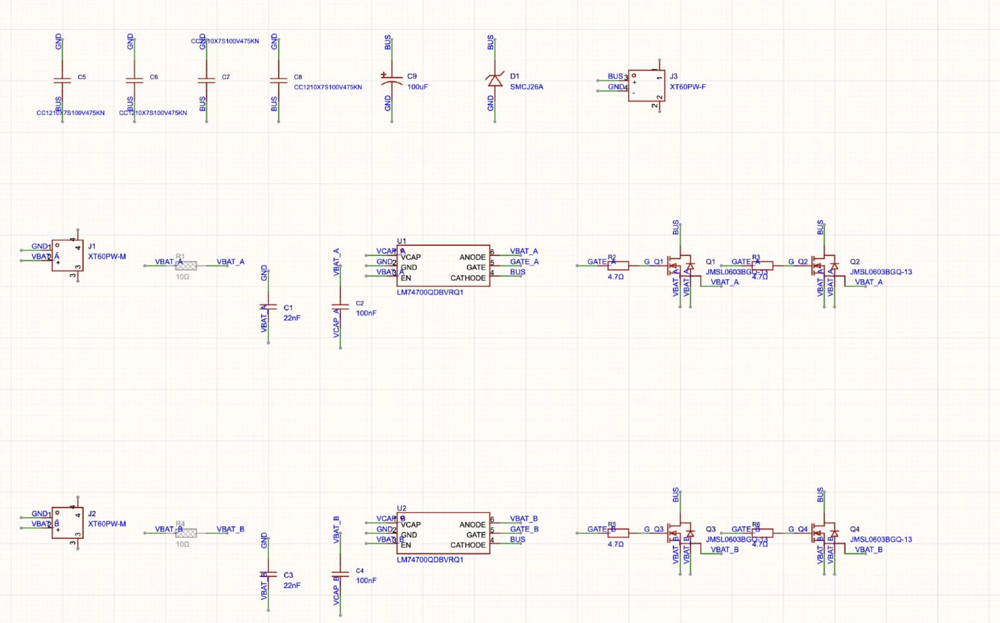
Schematic: one LM74700 ideal-diode stage per battery, both feeding the common bus.
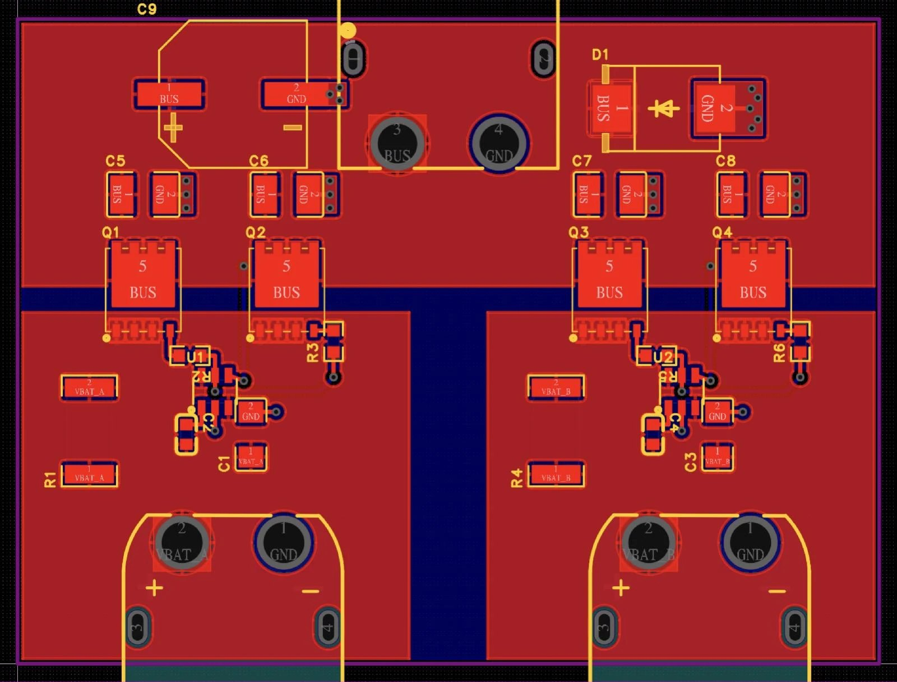
Top layer layout: battery inputs at the bottom, MOSFETs in the middle, bus capacitors, TVS and output at the top.
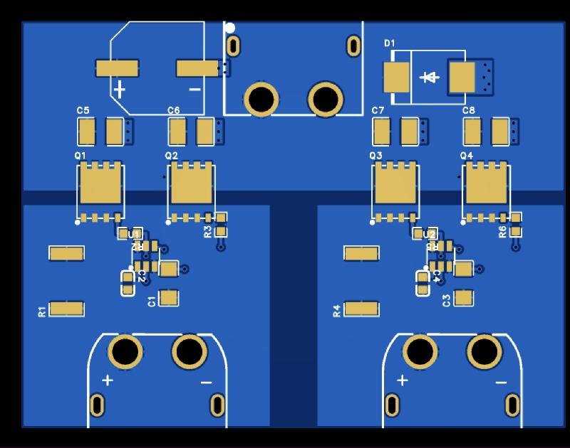
The bare board seen from above (EasyEDA).
Tech
Power
Two 6S batteries, hot-swap, 12 V and 5 V rails
Avionics
Pixhawk 6X, Jetson Orin Nano, 4 LiDARs
Hot-swap
2 × LM74700 ideal diodes, 4 MOSFETs, XT60 in/out
Tools
KiCad, EasyEDA
More projects
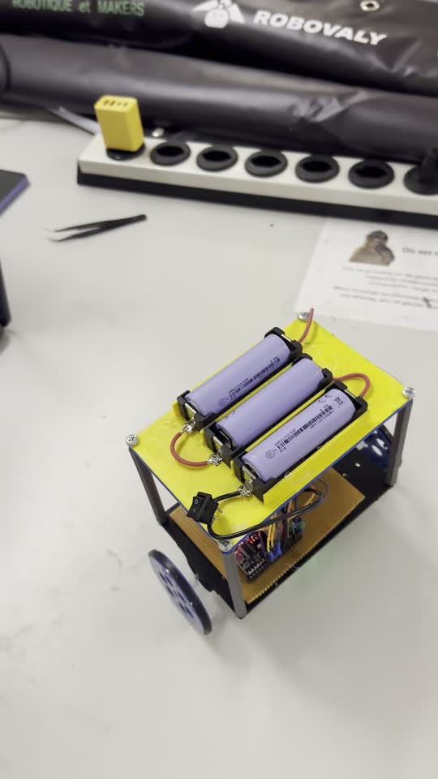
Completed
Self-balancing robot
A two-wheeled robot that keeps itself upright on its own, built from a first prototype to a working robot.
Control
State feedback at 200 Hz, LQR gains + auto-tuning
Power
3S 21700 Li-ion pack
PCB
OmniBattery 3S power board (EasyEDA)
Completed
Self-balancing robot
A two-wheeled robot that keeps itself upright. In the video above it is pushed by hand several times and recovers each time.
The robot
The robot is built on a stack of plates: two geared DC motors at the bottom, the electronics in the middle and three 21700 cells on top. An ESP32 reads the tilt from the IMU and the wheel motion from the encoders, 200 times per second, and drives the wheels to bring the robot back upright.
IMU + encoders→State feedback on ESP32→TB6612 driver→Wheels
Control: four gains, not three
A controller on the angle alone is not enough: the robot stays upright for two to four seconds, then drifts away. The command therefore also uses the wheel speed and the distance travelled.
u = Kp·e + Kd·ω + Kv·v + Kx·x
e and ω: tilt error and tilt rate, from a complementary filter on the MPU6050.
v and x: wheel speed and position, from the quadrature encoders.
The motor dead zone is compensated with a continuous ramp. A plain jump acted like a relay and kept the robot oscillating.
Gains that tune themselves
Tuning four gains by hand takes hours. The robot does it in four steps, from a web page it serves over its own Wi-Fi.
Identify the motor→Compute gains (LQR)→Auto-tune on the robot→Validate
Identify. Wheels in the air, three PWM steps. A line fitted to the encoder position gives the motor gain, its time constant and its dead zone.
Compute. A 4-state model (position, wheel speed, angle, tilt rate) is built from those values, the wheel radius and the height of the centre of mass. An LQR gives the first set of gains, and a simulated 2° tilt checks that the motors would not saturate.
Auto-tune. The robot tries each gain a little higher, then a little lower, and keeps what lowers a cost made of tilt, shaking, drift and motor saturation (Twiddle). Each trial is scored in two halves, so an oscillation that grows is caught. A fall costs a lot.
Validate. A final long trial with the best gains. If the robot falls or starts to oscillate, the starting gains are restored.
Before the final robot, a first prototype was built to test the motors, the sensors and the balance loop.
Video of the prototype balancing on its own.
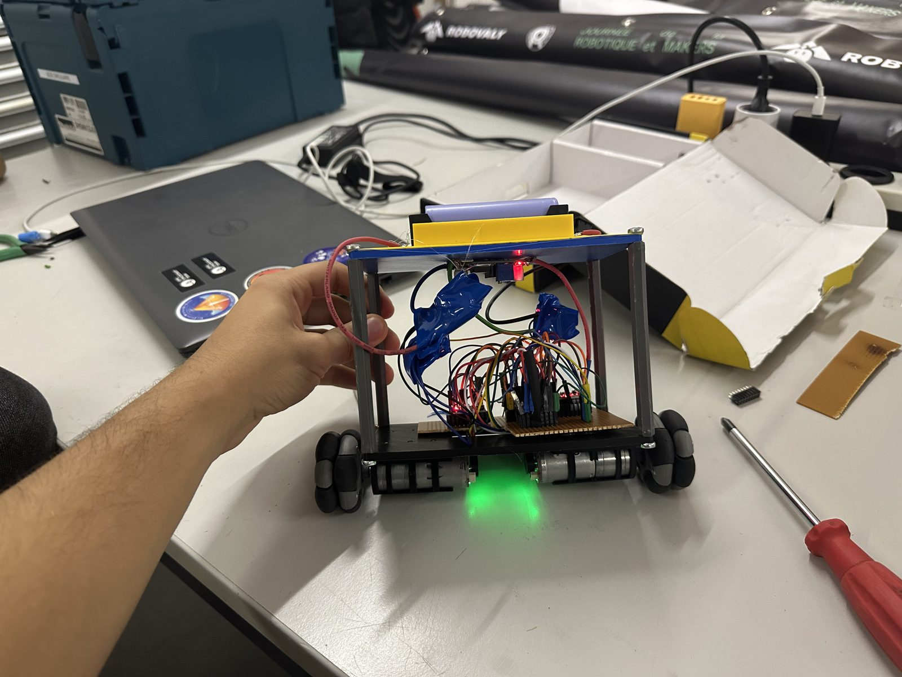
On the bench: hand-wired electronics on perfboard between the motor plate and the battery plate.
Power board: OmniBattery
The robot is powered by OmniBattery, a custom power board that holds three 21700 cells in series and gives the robot everything it needs from one connector. We are now integrating it into the robot, in place of the loose wiring.
3 × 21700 (3S)→5 A fuse→Switch→2 × LM2596 buck→VBAT · 5 V · 3V3 · GND
The BMS sits on the low side (B− → P−), while the fuse and switch are on the high side. The BMS senses the pack directly, upstream of the fuse.
Two ground nets: everything refers to the protected ground P−, and BAT− is a dedicated trace kept out of the pour so current cannot bypass the BMS.
Cells on top, power parts on the bottom, which keeps the board at 100 × 100 mm, the cheapest fab tier.
Rev B added the 5 A fuse, a 3S BMS and ground pours on both layers stitched with 17 vias.
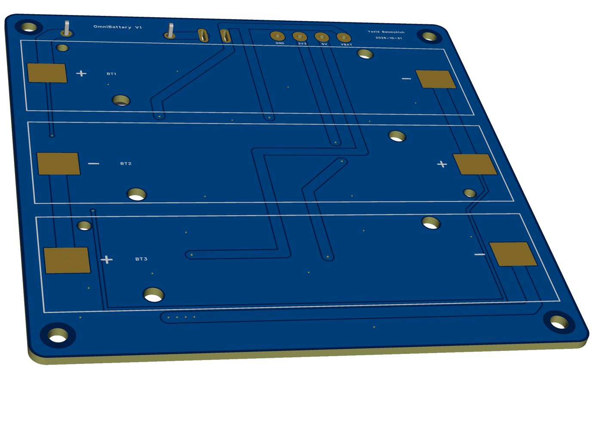
3D preview, cell side: the three 21700 holders.
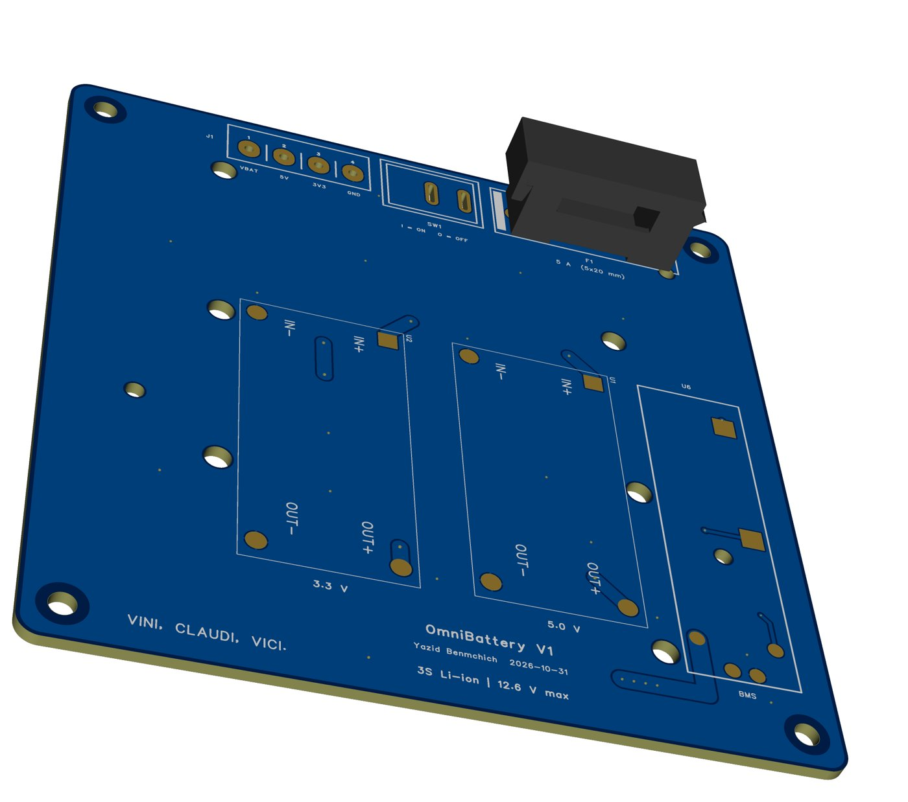
3D preview, power side: footprints for the buck modules, BMS, fuse, switch and output terminal.
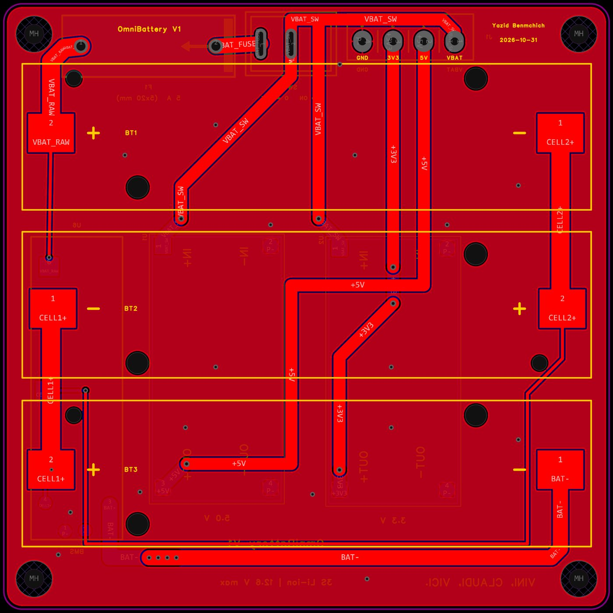
Top layer layout: the three cell holders and the pack-current paths.
We taught a low-cost SO-101 arm to pick leaves from a plant board, as a first step toward automated plant-health monitoring in greenhouses. The robot learns the task from human demonstrations instead of hand-written code.
What I did
Assembled the arm, set up and calibrated the motors with LeRobot.
Recorded a teleoperation dataset of leaf-picking demonstrations and published it on Hugging Face.
Trained an ACT (Action Chunking Transformer) policy in PyTorch and ran it on the real arm.
DeepSeek-style Mixture-of-Experts models have 256 experts, and each token is sent to 8 of them. Some experts get 3 to 5 times more tokens than average, so the GPUs hosting them become the bottleneck. We wrote the algorithm that decides which experts to copy and where to place them, and beat DeepSeek's EPLB baseline by 14.2%.
The challenge
Implement a rebalance() function, in numpy only, that lowers the peak-to-average load ratio between GPUs (PAR = max load / mean load, 1 is perfect) without moving experts for nothing, since every move costs a data transfer. The score combines both: compute time grows with the mean PAR, and transfer time with the number of experts moved.
Four ideas on top of the baseline
Smoothed load estimates. Instead of reacting to each window's raw load, we track the mean and the variability of every expert with exponential moving averages, which filters out noise.
A separate hedge for replication. The PAR floor is set by experts that spike between rebalances, so volatile experts get extra copies, without changing where the others are placed.
Local-search refinement. Greedy bin-packing can leave the hottest GPU up to a third above optimal. A few swaps between the hottest GPU and cooler ones close most of that gap.
Cost-gated redeployment. A layer is only reshuffled when the PAR gain is worth the transfer cost, and the new placement is aligned with the old one to move as few experts as possible.
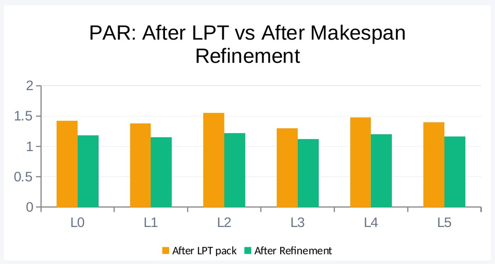
Local-search refinement lowers the peak-to-average ratio on every layer after the initial packing.
What made it work
The imbalance term dominated the score, while transfers were only about 1% of the total, so balancing load was the main lever.
The largest case (256 GPUs, 256 experts) timed out at first, so the algorithm had to be made fast enough at that scale.
Getting the knot tension right is essential for a wound to heal, and surgeons need to practise it. The StitchMeter lets them train anywhere, including in disaster areas: it measures how tight a stitch is tied, then tests the thread up to failure. It has no electronics and no sliding joints. Every guide is a flexure, so there is no wear, no play and almost no maintenance.
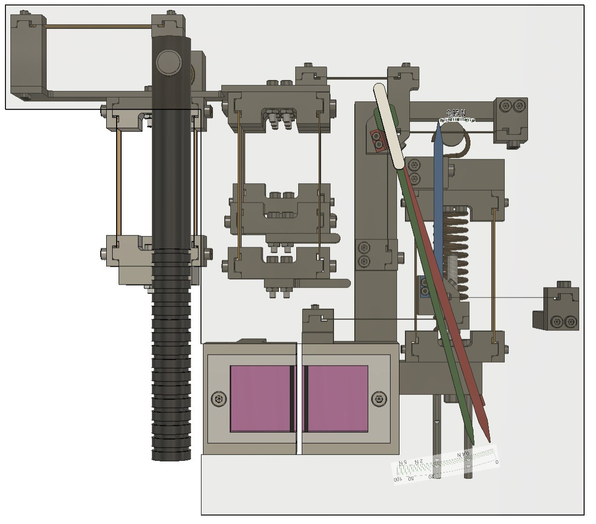
Top view: the actuation lever on the left, the wound pads at the bottom, the blade stages in the middle and the measuring needles on the right.
How it works
Phase I, knot tension. One wound edge sits on a block guided by a parallel-blade stage. As the knot closes the wound, the block moves up to 2 mm against a known stiffness, and a link turns that motion into a needle rotation amplified 8 times. The scale reads up to one tenth of the thread's nominal strength, with a resolution of 1/200 of it.
Phase II, thread strength. A lever with a 12:1 ratio pushes a second block through three blade stages that engage one after the other. This gives a non-linear spring: fine resolution for small forces, up to 100 N at full stroke, for less than 10 N on the lever. A drag needle stays at the maximum force when the thread breaks.
Three thread sizes. A helical spring preloads the first blade stage and lowers its stiffness. Turning a screw changes the preload, so the same 2 mm stroke covers the EP3, EP6 or EP9 thread. Notches on the rails show where to stop, so nobody has to count turns.
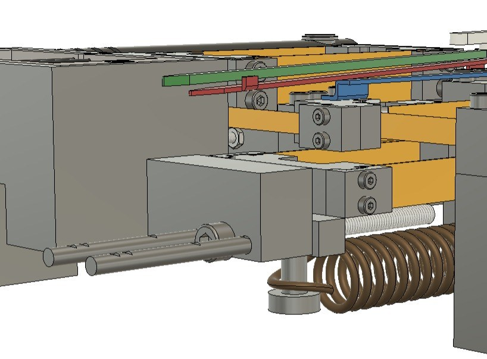
The preload spring and its adjustment screw, under the blade stages that set the measuring stiffness.
My part
Sized the flexure guides with two teammates: stiffness of each pivot, link and blade stage, and maximum stresses, all kept below the fatigue limit for 10 million cycles.
Designed the preload screw: an M4 stainless screw that is self-locking (helix angle 3.6° against a friction angle of 8.5°), with a safety factor of about 22 and less than 4 N needed on the knob.
A hand-cranked machine that fires squash balls at 80 to 130 km/h: an 85:1 gear train spins two launch wheels, and a worm-driven magazine feeds a ball every 2.2 seconds.
The brief: a purely manual machine, under 15 kg, that launches squash balls at 80 to 130 km/h, with every part machinable on a 3-axis CNC. We designed it end to end, from the gear train to the frame, and documented it with full detail and assembly drawings.
Speed. To throw a ball at 100 km/h, wheels of 52.5 mm radius must spin at about 529 rad/s, 84 times faster than the crank. Two gear pairs give 85:1, with a 45-tooth idler to get the right direction of rotation.
Feeding. A worm turns a half-disc magazine with five pockets at 1/22 of the crank speed. The balls are placed so the wheels reach full speed (about 11 s) before the first ball drops into the chute, then a ball arrives every 2.2 s.
Launch. An energy balance between the spinning wheels and the ball gives an exit speed of 0.978 times the wheel's surface speed.
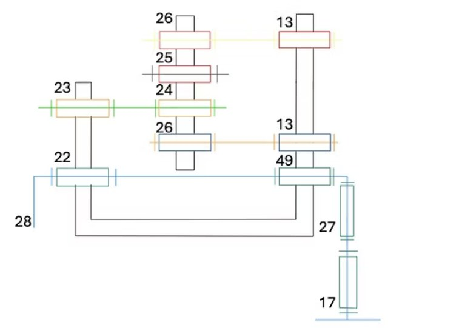
Kinematic chain: crank (28), the two gear pairs, the worm (27) driving the magazine (17), and the launch wheels (13).
Sizing
Gear modules from the tooth-strength criterion (0.75, 0.5 and 1.5 mm), shafts sized in torsion, and keys, pin, screws and bearings all checked with safety margins.
Overall efficiency of about 0.70 (worm, gears, ball and plain bearings), which sets the crank force: 27 N for 80 km/h and 44 N for 130 km/h.
Aluminium frame with polycarbonate windows, POM-H wheels and magazine, about 12 kg in total.
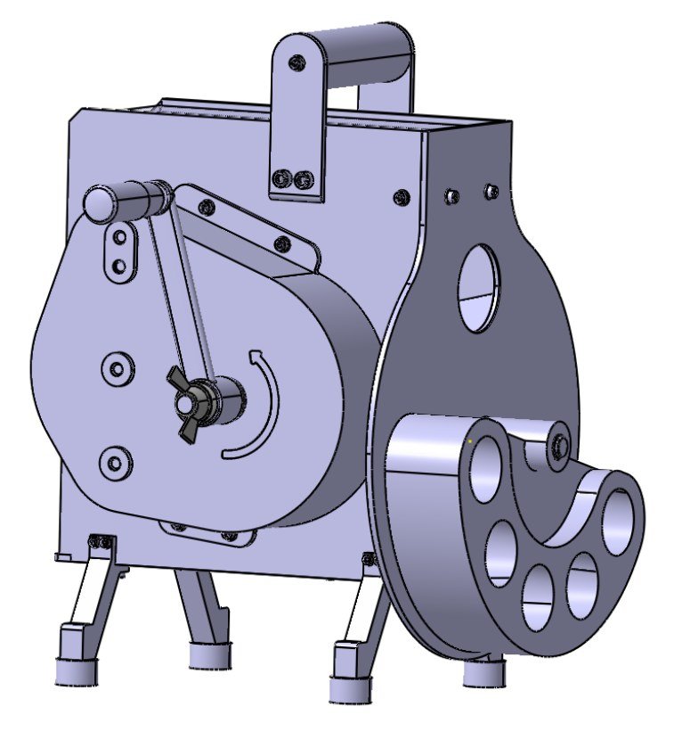
Rear view: crank and gear housing on the left, the ball magazine on the right.
Started at EPFLB.Sc. in Microengineering, Lausanne.
French international school, JeddahBaccalauréat with the jury's highest honours. Founded a Model UN for 5 schools.
About
I'm a third-year microengineering student at EPFL in Lausanne. I like the part of robotics where software meets the board: getting sensors to agree, getting models to run on small chips, and getting a robot to do the right thing without a laptop attached.
Next year I start a master's focused on navigation and perception.
Control & estimationPIDLQRExtended Kalman FilterSensor fusion
Embedded & electronicsESP32Pixhawk 6XJetson Orin NanoPCB designKiCadEasyEDA
CodePythonC / C++LinuxGit
StudiesB.Sc. Microengineering, EPFL (2027)
TeamsEPFL Xplore (drone), EPFL AI Team
ConsultingJunior Entreprise EPFL
TeachingMaths tutor, CVAJ
LanguagesFrench and Arabic (native), English (C1), Spanish (B2), German (A1)
Based inLausanne, Switzerland
Beyond robotics
What I do when nothing is on the bench.
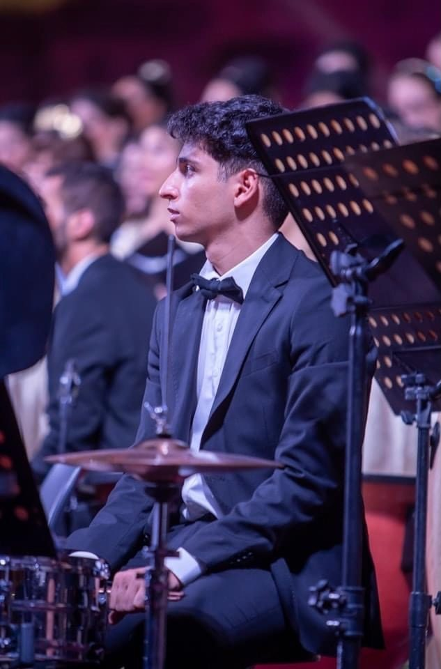
Music
Percussion in the orchestra
I play percussion in a symphony orchestra at EPFL. Before that I played with the Carthage Symphony Orchestra (CSO) and with the OLFM, the international Orchestre des Lycées Français du Monde. Counting 60 bars of rest and coming in on time is good training for real-time systems.
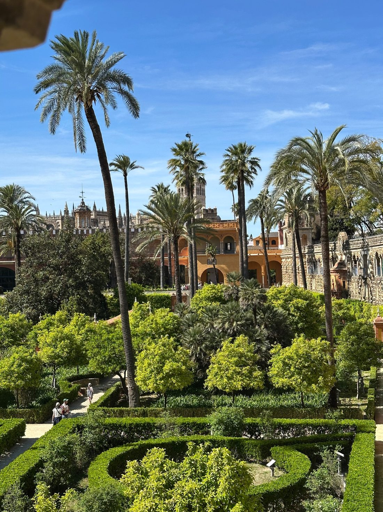
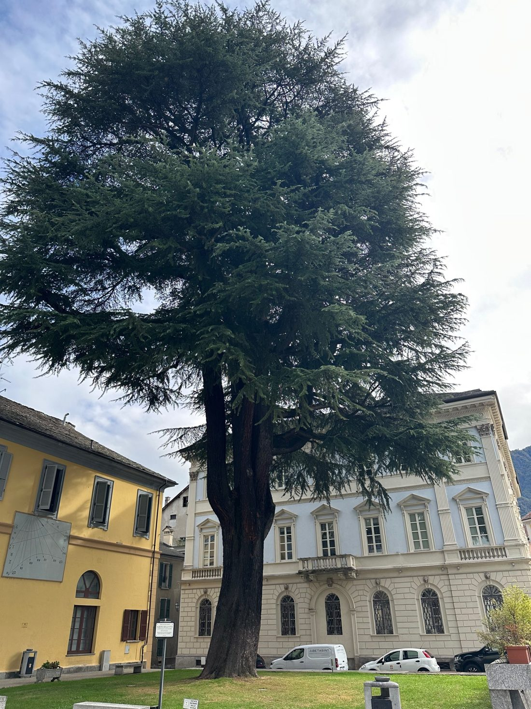
Travel
Always planning the next trip
Spain and Italy most recently. I like cities I can cross on foot, and practising my Spanish on the way.
Leadership
A Model UN from scratch
In high school I founded a Middle East Model United Nations: 5 schools from 3 countries. I led the organisation and chaired a committee.
Get in touch
Email is the fastest way to reach me. I answer in French, English, Arabic or Spanish.